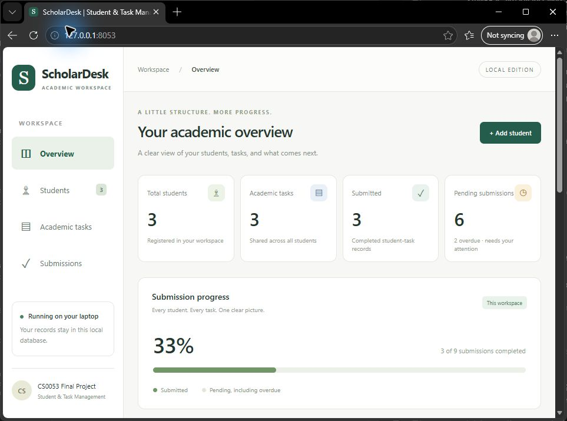

CS0053 · ScholarDesk · November 21, 2026
User Manual
Manage student records, academic tasks, and submission status on your laptop.

1. Open and close the application
- Open the ScholarDesk folder and double-click Start ScholarDesk.cmd.
- Your normal browser opens http://127.0.0.1:8053/. Keep the project folder in place while running.
- For a new workspace, select Load demo records on Overview to try three fictional students and three fictional tasks. This action is available only when both directories are empty.
- When finished, double-click Stop ScholarDesk.cmd. Records stay saved.
2. Register and manage students
- Select Students, then Add student.
- Enter the student number, full name, valid email, program/course, year level (1–6), and section. All six fields are required.
- For Program / course and Section, click the arrow to browse suggestions, or type to search. Each field starts with 10 suggestions from the supplied lists. Select a result with the mouse, or use the arrow keys and Enter. You may enter another code when needed; older saved values remain editable.
- Select Save record. Student number and email must each be unique, ignoring capitalization.
- Use the search field to find a name, student number, email, program, or section.
- Select Edit beside a student, change the fields, and save.
- Select Delete and read the confirmation. Confirming permanently removes that student and their submission records. Cancel keeps the record.
3. Create academic tasks
- Select Academic tasks, then Add task.
- Enter a title, subject/course code, and deadline. The subject field has the same searchable course suggestions. Description is optional.
- Select Save record. The task is tracked for every registered student.
- Search by title, subject, or description. Use Edit to change a deadline, or Delete to remove a task and its related submission records.
4. Monitor submissions
- Select Submissions. Each row represents one student and one task.
- Select Mark submitted when work is received. The server records the current Manila date and time.
- Select Mark pending to correct a mistaken submission. This clears the previous timestamp; marking submitted again records a new timestamp.
- Search for a student or task. Filter to Submitted, Overdue, or Pending + overdue.
- Select Refresh records to fetch changes made through Postman or another local browser tab.
This app tracks whether work was submitted. It does not upload or store assignment files. All tasks apply to all students, including newly added students.
5. Read the dashboard
| Metric | Meaning |
|---|---|
| Total students / academic tasks | Current registered records. |
| Expected submissions | Student count × task count. |
| Submitted | Student-task pairs marked submitted. |
| Pending | Expected minus submitted, including overdue work. |
| Overdue | Unsubmitted pairs whose deadline is before today's Manila date. Due today remains pending. |
| Completion | Rounded submitted ÷ expected × 100; zero when there are no assignments. |
6. Back up or move your records
Stop ScholarDesk first. Copy data/scholardesk.sqlite to a safe folder. To move the app, copy the complete ScholarDesk folder and install XAMPP/PHP on the new computer. To restore, stop the app and replace its database with your backup. The source ZIP starts with an empty database; demo records can be loaded from Overview.
7. Troubleshooting
| Problem | Action |
|---|---|
| PHP was not found | Check that XAMPP exists at C:\xampp. If installed elsewhere, update phpPath in tools/serve.ps1. |
| Page cannot be reached | Run the launcher again and use the full http://127.0.0.1:8053/ address. Check tools/server-error.log if it still fails. |
| Another application uses port 8053 | Close that other application or have a developer change the port consistently in the launcher and Postman collection. |
| Student already exists | Search the directory and use Edit, or enter a unique number and email. |
| Refresh the page / session token error | Reload the browser. In Postman, run request 01 again, using the same local host address. |
| Changes from Postman are not visible | Reload the app or use Refresh records on Submissions. |